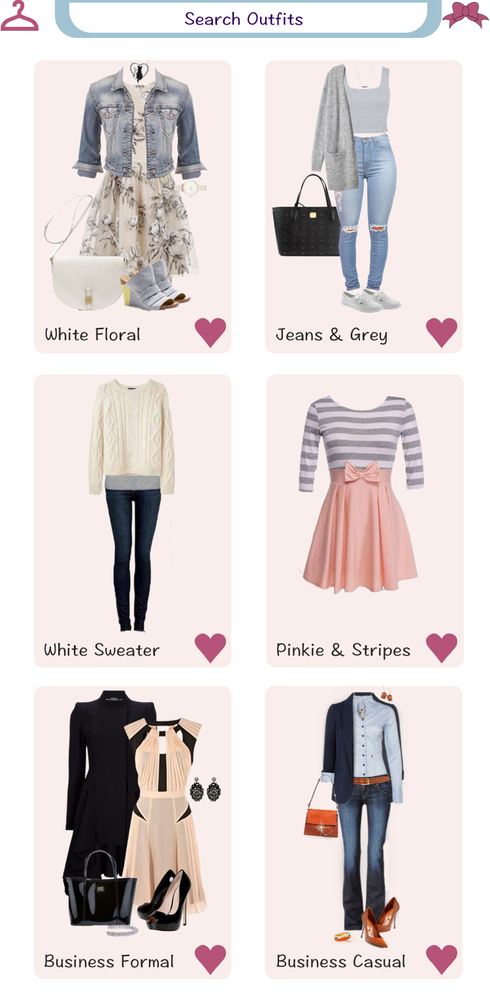

"Bow" is a prototype of an app that I created for a class app-making competition (which I won).
I built the fireframes in XD and pieced together the prototype using inVision. The idea of my app is to allow users to shop for clothes by item or by outfit and match them with clothes they already own.

Users can use the search box to search for clothes by a variety of key descriptors: color, style, season, etc. Users can also use the "Matches" tab to search for items that can be matched with the search term. For instance, a user could search "red top" in the "matches" tab and find results of items other users have matched to a "red top," like pants or a jacket.
When a user finds an item they like, they can tap the heart icon and have it saved to their closet. "My Closet" is where users casn find their saved items and their own items of clothing, which they can add by taking a photo and uploading it to the app's server. Ideally, the server would be able to select just the item of clothing from tthe photo and save that image file to the user's closet.
Also in "My Closet" is the main purposew of the app. Users can create outfits with the items they own and those they may want to buy, which would help them decide if they want to buy them.

When the user creates an outfit that they like, they can tap the heart icon to save their outfit with a name to their closet. Users can then scroll through and search for outfits that they've created.

Explore my prototype here.